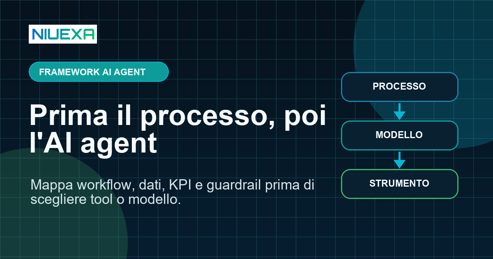
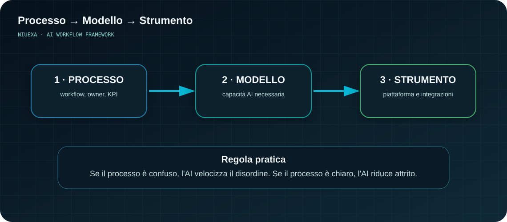
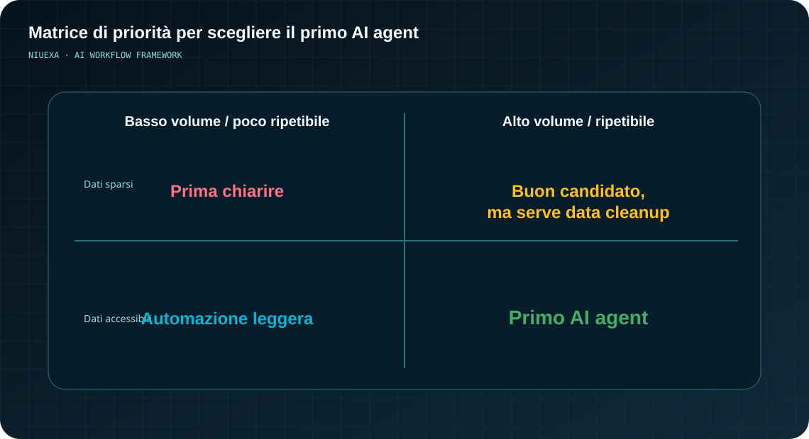
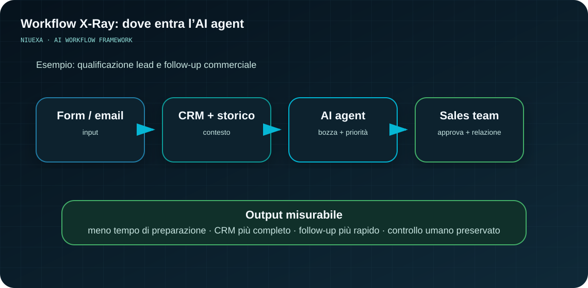

Risposta rapida: da dove partire con un AI agent?
Prima di scegliere un AI agent, scegli un processo. Un buon candidato ha attività ripetitive, input e output riconoscibili, dati accessibili, eccezioni gestibili, un owner umano e KPI misurabili. La sequenza corretta è Processo → Modello → Strumento: se il processo è chiaro, l'AI può togliere attrito; se è caotico, l'AI rischia di diventare decorativa.
Perché partire dal tool è il modo più veloce per sprecare budget AI
In molte aziende la conversazione sull'intelligenza artificiale inizia così: “Dobbiamo usare ChatGPT Enterprise?”, “Meglio Copilot o un agent builder?”, “Possiamo mettere un chatbot sul sito?”. Sono domande legittime, ma spesso arrivano troppo presto.
Il problema non è lo strumento. Il problema è che l'AI viene aggiunta sopra un processo già confuso: responsabilità non chiare, dati sparsi, approvazioni informali, passaggi manuali tra file, email e sistemi. In questo contesto un AI agent non crea automaticamente efficienza. Può velocizzare il disordine.
Processo chiaro → AI utile. Processo caotico → AI decorativa.
La domanda giusta non è “quale modello scegliamo?”. È: quale lavoro deve cambiare? Solo dopo ha senso parlare di agenti, prompt, integrazioni, tool calling, RAG o automazioni.
Il framework: Processo → Modello → Strumento
Un progetto di AI automation dovrebbe procedere in tre passaggi. Saltarne uno aumenta il rischio di creare una demo interessante ma poco usata dal team.

1. Processo: cosa deve migliorare davvero?
Il primo passo è mappare il workflow operativo: attività, input, output, sistemi coinvolti, decisioni, eccezioni, tempi, colli di bottiglia e responsabilità. Non serve un documento perfetto, serve chiarezza sufficiente per distinguere ciò che è ripetibile da ciò che richiede giudizio umano.
- Quale attività consuma più ore ogni settimana?
- Dove si perdono informazioni tra persone, file e sistemi?
- Quale decisione viene rimandata perché i dati sono sparsi?
- Quale output deve essere controllato prima di uscire?
2. Modello: quale capacità AI serve?
Dopo il processo, si definisce la funzione dell'AI. Deve classificare richieste? Sintetizzare documenti? Generare bozze? Estrarre dati? Preparare follow-up? Suggerire priorità? Ogni capacità richiede dati, controlli e metriche diverse.
Questa fase evita di trasformare ogni problema in “mettiamo un chatbot”. In molti casi l'automazione migliore non è conversazionale: può essere un workflow con AI in uno o due passaggi critici, controllato da regole e approvazioni.
3. Strumento: quale piattaforma integra meglio il workflow?
Solo alla fine si sceglie lo strumento: piattaforma AI, CRM, automazione, integrazione con email, knowledge base, agent framework o soluzione custom. A quel punto la scelta è più semplice, perché il team sa già quali dati servono, quali azioni sono permesse e quale risultato deve essere misurato.
5 domande prima di costruire un AI agent
Prima di investire in un AI agent, usa queste domande come filtro operativo.
1. Quale attività ripetitiva consuma più ore ogni settimana?
Gli agenti AI sono più utili quando riducono lavoro ripetitivo ad alto volume: triage di richieste, preparazione di bozze, aggiornamento CRM, sintesi documentale, classificazione ticket, ricerca interna o follow-up commerciali.
2. Dove si perdono informazioni tra persone, file e sistemi?
Molti ritardi nascono dal passaggio di contesto: un'informazione è in una call, un'altra in un PDF, un'altra nel CRM, un'altra in una chat. Un agent può aiutare solo se questi punti di accesso vengono identificati e governati.
3. Quale decisione viene rallentata da dati sparsi?
Un buon caso d'uso non è solo “generare testo”. È ridurre il tempo necessario per arrivare a una decisione: priorità lead, escalation ticket, suggerimento di risposta, confronto tra preventivi, analisi preliminare di documenti.
4. Quale output richiede controllo umano?
Il controllo umano non è un limite: è un guardrail. Nei processi aziendali l'AI dovrebbe proporre, preparare e verificare; le decisioni ad alto impatto devono avere owner, approvazione ed escalation.
5. Come misuriamo se il workflow è migliorato?
Prima del progetto definisci una baseline: quanto tempo richiede oggi il processo, quanti errori produce, quante richieste gestisce, quale qualità media ha l'output. Senza baseline, anche un agent funzionante resta difficile da difendere in termini di ROI.
Dove cercare il primo ROI
Per evitare progetti troppo ambiziosi, conviene partire da processi circoscritti ma frequenti. Alcuni segnali indicano che un workflow è un buon candidato:

- Alto volume: molte richieste simili o attività ripetute ogni settimana.
- Passaggi manuali: copia-incolla tra CRM, email, fogli, gestionali o drive.
- Output standardizzabile: email, report, sintesi, schede, ticket, classificazioni.
- Contesto recuperabile: dati e documenti disponibili, anche se dispersi.
- Controllo già presente: una persona verifica o approva l'output finale.
- KPI chiaro: tempo risparmiato, tempi di risposta, errori, conversioni, backlog o qualità.
Il primo progetto non deve “trasformare tutta l'azienda”. Deve dimostrare che un workflow può diventare più veloce, controllabile e misurabile.
Esempio pratico: vendite e follow-up
Un approccio debole sarebbe: “mettiamo un chatbot per i lead”. Un approccio orientato al processo parte invece dal workflow commerciale.

Processo: qualificare un lead, raccogliere contesto, preparare follow-up e aggiornare il CRM.
AI agent: legge note e campi CRM autorizzati, sintetizza bisogni e obiezioni, propone priorità, prepara una bozza di email, suggerisce il prossimo step e segnala informazioni mancanti.
Controllo umano: il commerciale approva, modifica o rifiuta la bozza. L'agent non invia comunicazioni sensibili senza consenso e non inventa informazioni assenti dal CRM.
KPI: tempo medio per preparare follow-up, completezza del CRM, velocità di risposta, tasso di avanzamento delle opportunità, qualità percepita dal team.
Questo è un caso in cui l'AI non sostituisce il lavoro commerciale. Toglie attrito dal lavoro reale e libera tempo per relazione, negoziazione e decisioni.
Guardrail: cosa chiarire prima di automatizzare
Un AI agent utile deve avere limiti espliciti. Senza guardrail, il rischio non è solo tecnico: è operativo, reputazionale e organizzativo.
- Dati: quali fonti può leggere? Quali dati non devono mai essere inseriti?
- Azioni: può solo preparare bozze o anche aggiornare sistemi?
- Approvazioni: quando serve conferma umana?
- Escalation: quando l'agent deve fermarsi e chiedere aiuto?
- Audit: come vengono tracciate decisioni, output e correzioni?
- Formazione: il team sa usare l'agent nel flusso di lavoro quotidiano?
La governance non deve rallentare l'innovazione. Deve renderla adottabile. Un agent che il team capisce, controlla e misura ha molte più probabilità di produrre valore rispetto a una demo brillante ma isolata.
Mini checklist per decidere se partire
Se rispondi “sì” alla maggior parte di queste domande, il processo è un buon candidato per un primo progetto AI:
- Il processo è abbastanza importante da meritare attenzione manageriale?
- Gli step principali sono descrivibili in modo semplice?
- Input, output ed eccezioni sono riconoscibili?
- I dati necessari sono disponibili o recuperabili?
- Esiste un owner interno del workflow?
- Il rischio è gestibile con controllo umano?
- Il successo può essere misurato entro 30-90 giorni?
Se molte risposte sono “no”, non significa rinunciare all'AI. Significa fare prima un assessment sui processi: spesso è proprio lì che si scopre dove l'automazione può creare più valore.
FAQ: AI agent e processi aziendali
Quando ha senso creare un AI agent in azienda?
Quando il processo è ripetitivo, documentabile, collegato a dati accessibili, misurabile con KPI chiari e supervisionabile da un owner umano.
Qual è l'errore più comune nei progetti AI automation?
Partire dal tool invece che dal workflow. Se il processo è confuso, l'AI rischia di amplificare passaggi inutili e responsabilità poco chiare.
Quali processi sono buoni candidati?
Processi ad alto volume, con passaggi manuali, informazioni disperse, output standardizzabili, controllo umano e KPI misurabili.
Come si misura il ROI di un AI agent?
Con una baseline iniziale e metriche come ore risparmiate, errori ridotti, tempi di risposta, conversioni, backlog o qualità dell'output.
Serve formazione?
Sì. Il team deve sapere quando usare l'agent, quando verificare, quali dati inserire e quando chiedere escalation.